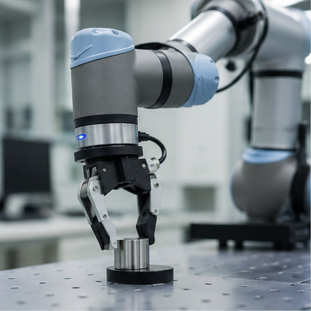
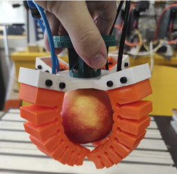
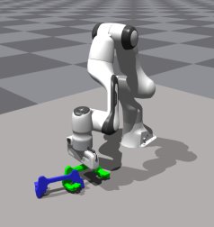
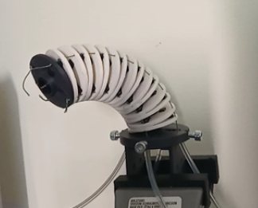

Interaction Robotics Lab
At the Interaction Robotics Lab, we investigate how robotic systems can adapt their motion and manipulation capabilities through physical interaction with the environment. Our research combines robotics, mechanics, control, and machine learning to develop intelligent robotic systems capable of reliable operation under uncertainty.
Our research focuses on robotic manipulation, continuum and soft robotics, with particular emphasis on motion planning, model-based and learning-based control, and adaptive behavior in dynamic and unstructured environments.
INTERACTION · MOTION · MANIPULATION · CONTROL · MACHINE LEARNING
VSB-TUO · CZECH REPUBLIC





LAB NOTES